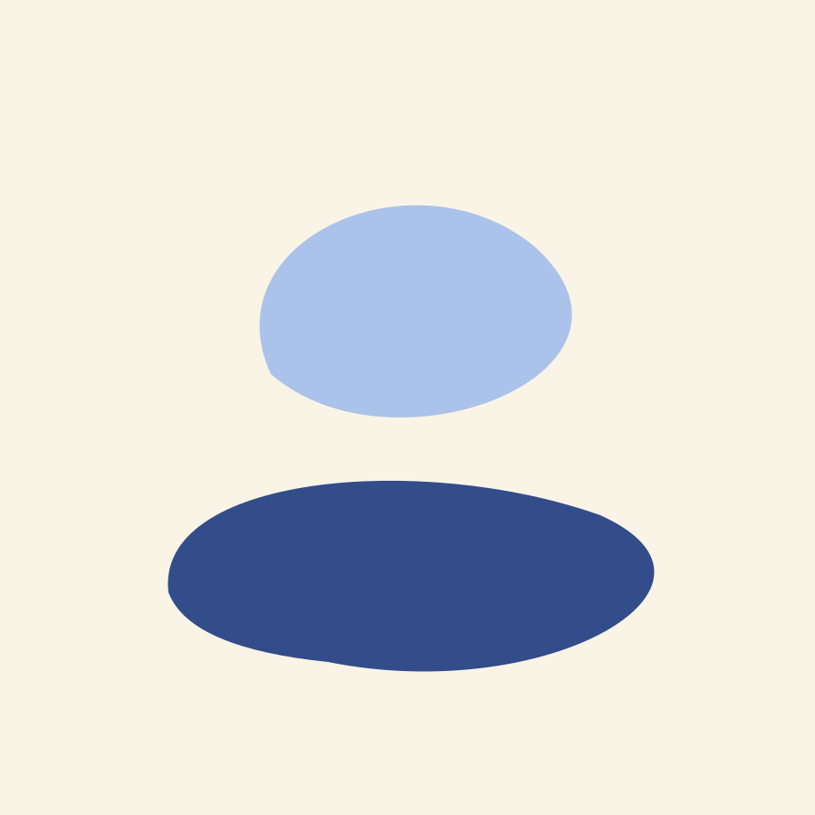
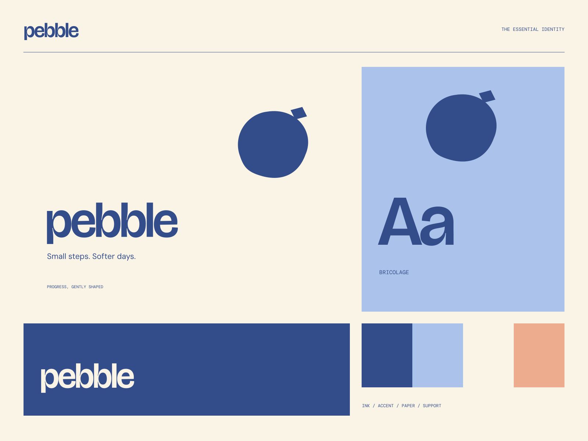

01
Start small
A thoughtful beginning that can fit into your actual day.
A LITTLE PRACTICE / A LITTLE PROGRESS
Small steps. Softer days. Progress does not have to be loud.

A coherent little world
Progress does not have to be loud. Small steps. Softer days.
01
A thoughtful beginning that can fit into your actual day.
02
A gentle approach to building something consistent.
03
Small progress, clearly seen and kindly celebrated.

The point of view
Soft dimensional stones, stacked organic frames, warm editorial annotations, and unforced friendly type. The system makes small progress feel worth noticing.